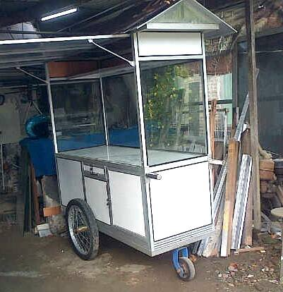

Rombong Sedekah, adalah sebuah lembaga sosial kemanusiaan yang berbasis pada pengumpulan dan pengelolaan dana sedekah secara bersama-sama (ber-Rombong-an) baik dikelola secara karitatif maupun secara produktif.
Pada awalnya fokus aksi lembaga rombong sedekah adalah pada aksi pemakmuran masjid seperti aksi jamuan makan gratis jamaah sholat jum'at, aksi resik masjid, dan aksi sebar galon air ke masjid musholah.

Seiring perkembangan Aksi kami mulai beragam sehingga kami membagi Aksi kami kedalam 3 pilar yang saling sinergis, antara lain :
- Pilar ke-1
Aksi Memakmurkan Masjid - Pilar ke-2
Aksi Berdaya Dhuafa - Pilar ke-3
Aksi Perangi Riba - Suburkan Sedekah
Kami yang sangat masih baru ini masih sangat membutuhkan masukan, nasehat dan saran dari para donatur. Dengan mengucap BismiLLAH dan diniatkan untuk Ibadah semoga Aksi kami menjadi inspirasi lembaga filatropi lainnya, aamiin YRA.